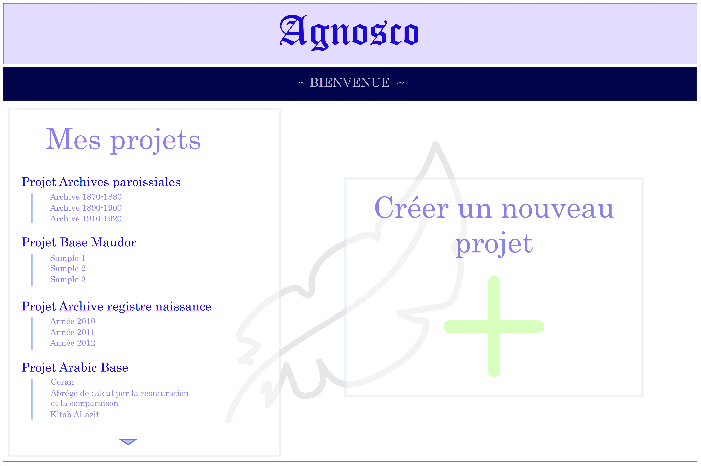

On Agnosco's homepage, the user has access to all of their projects and can also create new ones by selecting the scanned documents they want to transcribe.

Agnosco also provides a clipping page to manually locate the paragraphs of the manuscript, so that the document can be clipped line by line.

Once the document has been clipped line by line in thumbnails, they are displayed one after another with the corresponding transcription in the manual annotation page. The user can type those transcriptions by hand and modify them. With the cross in the upper-right corner of the thumbnail, they can also hide an irrelevant example which will not be taken into account for the training.

Agnosco provides a page of visualisation of the recogniser's learning results where the user can modify the wrong transcriptions.

At last, the final step of the creation of learning bases is the validation of the transcriptions in the validation page. Simply by pressing the Enter key, the user can validate all the transcriptions that are displayed on the page which have not be hidden before.